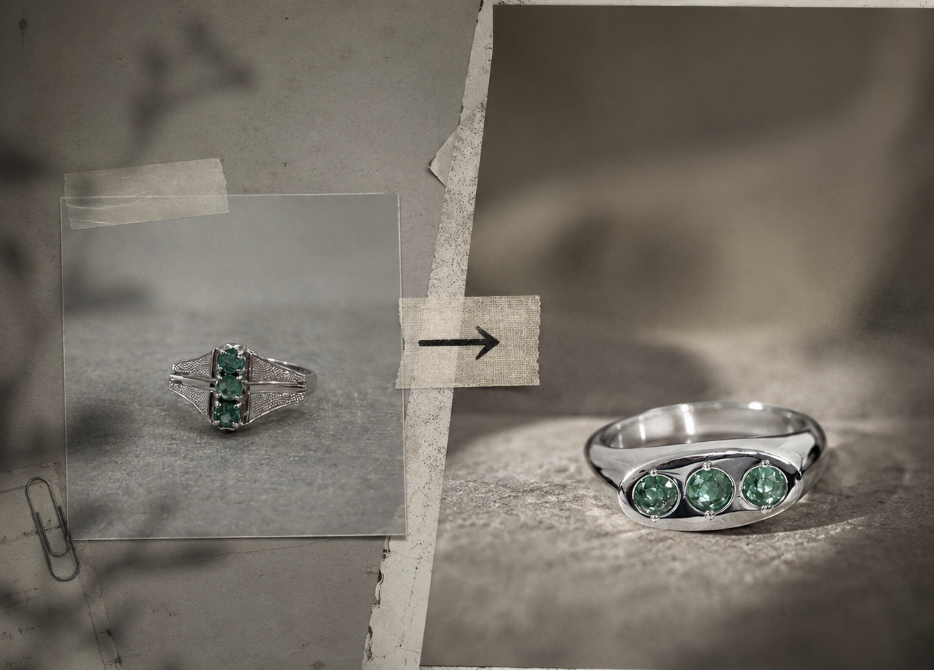

01 / FLAGSHIP
JEWELRY REVALUATION STUDIO
HERSTONE
眠っていた石を、
今の自分の一軍へ。
ジュエリーリフォーム、パールリメイク、パーマネントジュエリー、中古ジュエリーの再編集。鎌倉の旗艦店を起点に、継承を“特別なイベント”ではなく、日常の選択肢に変えていきます。
VISIT HERSTONE ↗REVALUATION
STUDIO
STUDIO
REVALUATION COMPANY / EST. 2025
すでにあるものの価値を、
もう一度ひらく。
We build businesses that turn inheritance, repair, reuse and memory into the next culture.
NOT NEW. NEWLY VALUED.
家に眠るジュエリー。受け継いだ石。古い真珠。誰かにとっては価値が見えにくくなったもの。その背景、技術、素材、記憶を別の評価軸で見直すと、そこにはまだ大きな価値が残っています。
BiSPOKEは、修理・リフォーム・再編集・再流通を通じて、ものと人の関係を更新します。私たちがつくりたいのは、消費の次にある文化です。
WHAT WE ARE BUILDING
JEWELRY REVALUATION STUDIO
眠っていた石を、
今の自分の一軍へ。
ジュエリーリフォーム、パールリメイク、パーマネントジュエリー、中古ジュエリーの再編集。鎌倉の旗艦店を起点に、継承を“特別なイベント”ではなく、日常の選択肢に変えていきます。
VISIT HERSTONE ↗JEWELRY REPAIR / RESIZE / REMODEL
直すことを、
買い替えるより自然に。
サイズ直し、修理、リフォームを全国からオンラインで受け付けるジュエリーケアサービス。長く使うためのインフラを、もっと使いやすく。
VISIT RETOLD TOKYO ↗JAPANESE VINTAGE JEWELRY
日本で見落とされた価値を、
世界の市場へ。
中古あこや真珠を中心に、日本国内で過小評価されているジュエリーを選び直し、リペア・再編集して海外へ。素材の価値と日本の手仕事を、次の市場につなぎます。
IN DEVELOPMENT / GLOBAL
私たちはブランドを増やしたいのではなく、「価値が見えなくなったもの」を見つけ、その価値を再設計する仕組みを増やしたいと考えています。
既存市場の評価軸からこぼれている価値を探す。
デザイン、体験、流通、言葉で価値の見え方を変える。
一度売って終わりではなく、次の世代へ残る循環をつくる。
OUR NORTH STAR
三世代先まで
語り継がれる
感動体験を、つくる。
BUILD EXPERIENCES WORTH RETELLING FOR THREE GENERATIONS.
BiSPOKE INC.
PARTNERS / PRESS / RECRUIT / BUSINESS
LET'S